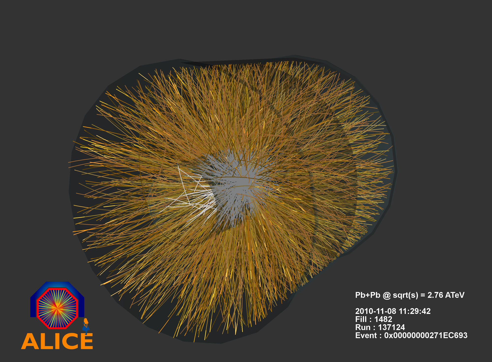

Como vimos na última seção, para criarmos o Plasma de Quarks e Glúons precisamos comprimir e fornecer energia aos núcleos. Isto é realizado no laboratório acelerando íons até velocidade próxima a da luz e fazendo-os colidir, como simulado acima.
Existem dois laboratórios de grande porte no mundo onde estas colisões são produzidas utilizando aceleradores muito potentes. O RHIC, nos Estados Unidos, colide íons de ouro e o LHC, na Suíça, colide íons de chumbo. Os núcleos são acelerados dentro de câmaras circulares rodeadas por ímãs que curvam as trajetórias dos mesmos. O túnel do RHIC tem 3,8km de circunferência e o do LHC, 27km
Ao serem acelerados, esses íons alcançam 99,99% (ou mais) da velocidade da luz. Quando colidem, parte da energia é depositada em um volume muito pequeno, criando um plasma com temperatura altíssima. As pressões são extremamente elevadas, fazendo com que este plasma se expanda e esfrie em um intervalo de tempo minúsculo, voltando à fase hadrônica. Assim, não é possível medir ou observar o plasma de quarks e glúons diretamente. Ao invés disso, estudamos as partículas resultantes da criação e da evolução do plasma.
Para obter informações sobre essas partículas são usados detectores gigantescos operados por colaborações de milhares de cientistas vindo de centenas de universidades e laboratórios ao redor do mundo. A foto do começo desta seção apresenta o ALICE, um dos principais detetores do LHC. Ele possui 26m de comprimento e 16m de largura e altura. Na figura ao lado, vemos as partículas detectadas numa colisão e seus caminhos no ALICE.
Milhares de pares são detectados em uma colisão. Os feixes colidiram ao longo do eixo do cilindro. Crédito: ALICE
Este é o desafio: após detectar milhares de partículas numa colisão, como saber se elas realmente emergiram de uma gotinha de plasma de aproximadamente dez a menos quinze metros de dimensão e que durou dez a menos vinte e três segundos?